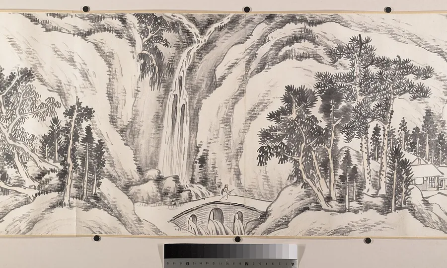
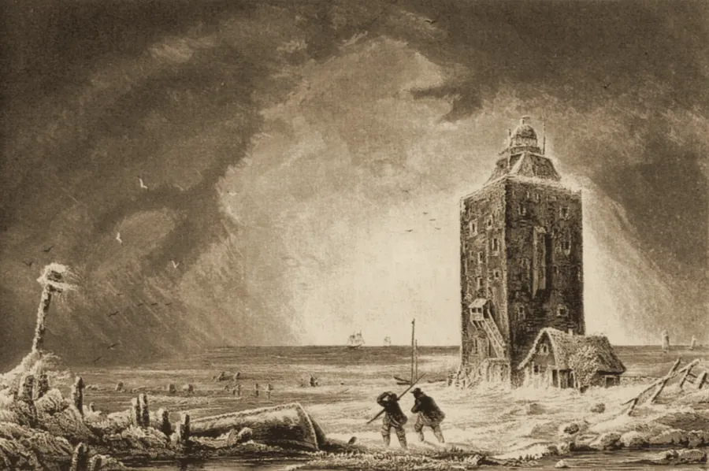
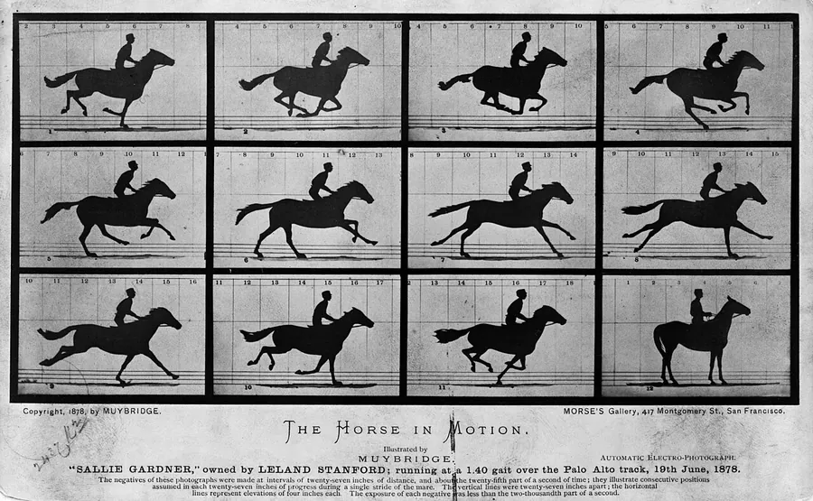

十月新书｜二十本值得读的人文新书



LUMEN学术 RSS 阅读器 · 开源
会议依截止排序，书单拆作单册，目录合成整期。
v{{VERSION}}{{NEWS}}→学术动态
从推文读出会议，按截止日排，同一场只留一条。
新书
书单拆作单册，按月上架，库里有的另作标记。
期刊目录
上下半期分两篇推，合成整期；人大复印转载的，标回原刊。
日报
昨天来了 23 篇，挑出值得看的分组写好，再荐一篇你平常不读的。
外文与检索
英文标题直接看中文；搜「骑手」，意思相近的也找得到。
开源与下载
数据只存在你自己的电脑上；源码以 MIT 许可公开，AI 接口自己填，不填也能用。